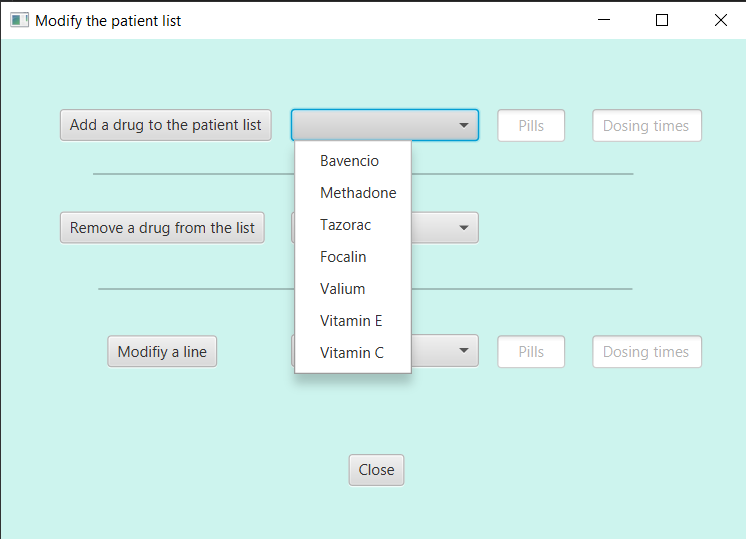

For every caregiver, they must have private features that only them can do like modify the list of medication. So they will have the choice to delete or add a medication with the number of pills and the dosing time.
List of medication
This is the display of the protected features that we put on the application. All the informations needed are here to guarantee the safety of every elder.